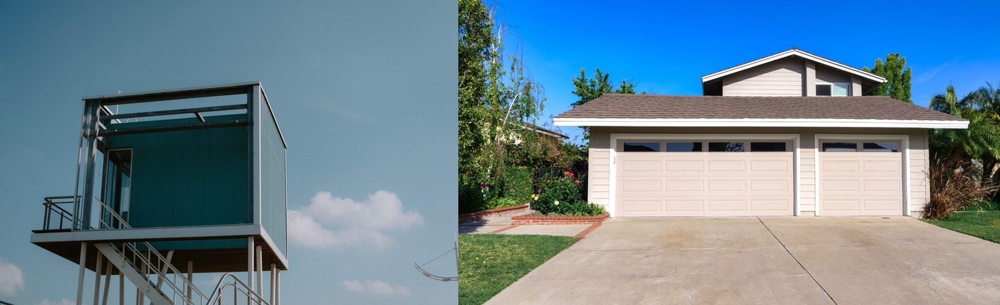

Modular vs Manufactured Homes
Both are built in a factory — but they're built to different codes, sit on different foundations, and hold their value very differently. The distinction most people get wrong, explained.

They sound like the same thing, and both are built indoors on a factory line — but modular and manufactured homes are legally and financially quite different animals. The distinction comes down to three things: the building code they're built to, the foundation they sit on, and how their value holds over time.
The quick verdict
Modular is built to the same local building codes as a site-built house and set on a permanent foundation — so it's treated like normal real estate and holds value. Manufactured is built to a single national code on a permanent chassis — cheaper, but it can depreciate and is harder to finance like a house.The head-to-head
| Factor | Modular | Manufactured |
|---|---|---|
| Building code | 🟢 Local codes (same as site-built) | 🟡 Single national (HUD) code |
| Chassis | 🟢 None — set on foundation | 🔴 Permanent steel chassis |
| Foundation | 🟢 Permanent foundation | 🟡 Often piers + skirting |
| Cost | 🟡 Higher | 🟢 Cheapest per sq ft |
| Resale / value | 🟢 Appreciates like a house | 🔴 Can depreciate |
| Financing | 🟢 Standard mortgage | 🔴 Often harder / different loan |
| Looks like site-built | 🟢 Yes | 🟢 Modern ones, yes |
How they actually differ
Both are factory-built, so people lump them together — but a modular home is essentially a site-built house that happened to be assembled indoors: same codes, permanent foundation, treated as normal real estate, and it appreciates. A manufactured home keeps its transport chassis, is built to the federal HUD code rather than local codes, is the cheapest housing per square foot, but can depreciate and is often financed differently (sometimes more like a vehicle than a house). Neither is 'bad' — they optimize for different things: modular for value and permanence, manufactured for lowest cost.
…in the tropics specifically
Both are uncommon in Panama and Costa Rica, where the local industry builds in concrete, so either would likely be an import — which erodes manufactured's price advantage in particular. Of the two, modular translates better to a tropical market: it's a permanent, foundation-set, financeable home that can be specified in durable materials. For most regional builds, though, a local concrete build remains the practical path.
Not sure which is right for your build?
SORA is a fixed-price design-build platform for foreign buyers in Panama and Costa Rica. We spec the material and method that actually fit your site, climate, and budget — and tell you straight when the cheaper option is the smarter one.
See real 2026 build costs →Frequently asked questions
What's the difference between a modular and a manufactured home?
A modular home is built to the same local building codes as a site-built house and placed on a permanent foundation, so it's treated like normal real estate and appreciates. A manufactured home is built to a single national (HUD) code on a permanent steel chassis, is cheaper per square foot, but can depreciate and is often financed differently.
Is a modular home better than a manufactured home?
For long-term value, usually yes — modular homes appreciate like conventional houses, finance with standard mortgages, and sit on permanent foundations. Manufactured homes win on lowest upfront cost. The 'better' choice depends on whether you're optimizing for value and permanence or for price.
Do modular and manufactured homes hold their value?
Modular homes generally appreciate like site-built houses because they're built to local codes on permanent foundations. Manufactured homes can depreciate, especially if not on owned land with a permanent foundation, which is a key financial difference between the two.
Sources & verification
Figures in this guide were checked against primary and authoritative sources on 27 July 2026. Immigration, tax, and cost figures change — always confirm the current rules with the official body or a licensed professional before acting.
- Bob Vila — modular vs manufactured homes
- MN Property Group — factory-built housing